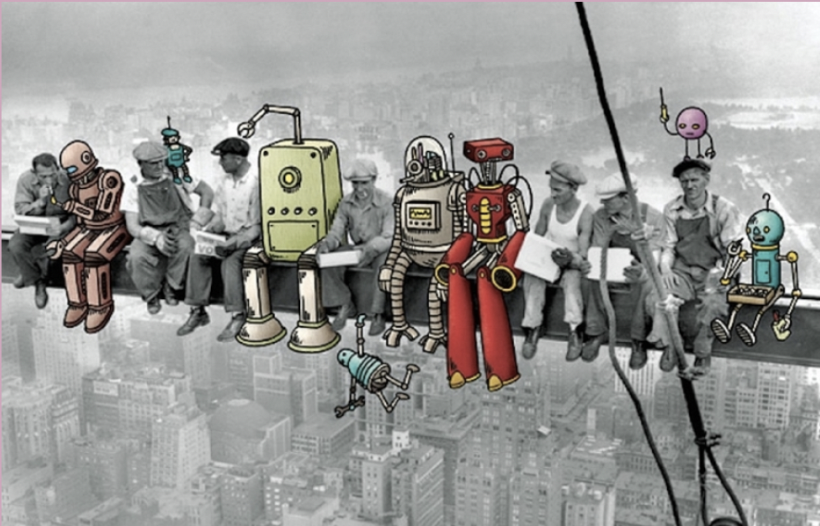

Gerfried Stocker es director artístico del Centro Ars Electronica en Linz/Austria, desde el año 1995, además de ser artista de medios e ingeniero de comunicaciones. En 1991 fundó x-space, donde implementó numerosos proyectos de instalación y performance en el campo de la interacción, la robótica y las telecomunicaciones. En 1995/96, él junto a un equipo de artistas y técnicos formularon nuevas estrategias pioneras de exhibición para el Ars Electronica Center y construyeron una unidad interna de investigación y desarrollo, el Ars Electronica Futurelab. El programa internacional de exposiciones de Ars Electrónica se ha desarrollado bajo su liderazgo desde 2004.
“El arte de mañana es el arte electrónico, un arte que tiene tanto de imagen visual como de música y de puesta en escena; que entremezcla a partes iguales el avance técnico formal del hardware con la base conceptual del software.” (Stocker,2001, p.6). “La característica del arte digital como "arte nuevo" es la de conseguir trascender de la región en que el ordenador y sus derivados de procesamiento de datos se utilizan únicamente como un instrumento más o, en última instancia, como un medio de representación intercambiable con cualesquiera otros.” (Stocker,2001, p.10).
Según el texto de Gerfried Stocker “El arte del mañana es el arte tecnológico”. Esto claramente se ve reflejado en la llegada de nuevas tecnologías, así el arte se ha hecho mucho más accesible para el mundo. Luego de la pandemia y sus confinamientos, los museos perdieron grandes cantidades de visitantes, lo que provocó el cierre de algunos de estos. Por lo anterior es que comenzaron a surgir nuevas formas de visitarlos, llegando así a la idea de los museos virtuales. Logrando recorrer museos, apreciando distintas obras a través de una página web y la tecnología de realidad virtual. Con relación a lo anterior algunos ejemplos de museos con visitas virtuales son el DiMoDA y el VOMA, en donde se logra comunicar cultura y compartir ideas de formas interactivas.
Algunos factores y circunstancias que determinan el arte del mañana son el vivir en un mundo donde la tecnología es imprescindible para nuestras vidas, en el cual tanto personas como medios deben ajustarse a la era digital. Durante la pandemia el teletrabajo se hizo indispensable, obligando a muchos a actualizarse y reinventarse con las nuevas tecnologías. A raíz de esto el año 2020, se creó el primer museo virtual del mundo. Siendo este completamente digital, y respondiendo a “El objetivo del arte es comunicar y compartir ideas (...) (pero) mucha gente no puede viajar a un museo. (...) Esta es una manera de hacerlo mucho más accesible.” Los tours virtuales se incrementan durante la pandemia, los “visitantes” sintieron que solo veían “un montón de fotografías unidas, en lugar de caminar por una galería de arte, algo que el VOMA pretende cambiar” dijo Semple.
Este arte se plasmó a través de una plataforma web, en donde se pueden observar obras de arte, e interactuar con ellas de manera 3D en alta definición, leer comentarios de visitantes, entre otros. Esto hará que el arte no solo sea ir a observar algo que pueda plasmar un sentimiento personal, sino que también se podrá compartir con otros, y generar una experiencia mucho más interesante.
Este proyecto aporta de distintas maneras, así como, expandiendo las distintas culturas, generando una conciencia social sobre las vivencias de otros habitantes a nivel mundial, comprendiendo cómo una obra de arte tiene una perspectiva completamente diferente a la personal, basado en la cultura, sociedad, grupo, y otros. Además al estar en un medio digital, se podrá ir renovando constantemente el contenido, y no será necesario esperar años y meses para poder ver la nueva obra de arte o el nuevo sector del museo.
Actualmente nos encontramos rodeados de celulares, computadoras, nuevas tecnologías que van formando nuestro nuevo mundo, generando así parte de nuestra esencia como seres humanos. Producto del exceso de uso de tecnología y el constante abuso de ella nos hemos vuelto dependiente de esta, logrando cuestionarnos si estamos perdiendo nuestra parte humana.
Frente a esto se presenta la deshumanización, la cual se caracteriza por ser un proceso mediante el cual el ser humano pierde alguna o todas de sus características humanas que logran definirlo. Estableciendo un gran vínculo con la tecnología y lograr cuestionarnos si esta ha provocado que con el paso del tiempo esta se vaya adueñando de nosotros.
Una condición extrema de la dependencia del uso de la tecnología es la tecnofilia, llegando a un punto donde las personas no se pueden separar de ella. Esto se puede percibir en cierta parte de la población debido a que los dispositivos tecnológicos son utilizados de manera cotidiana, por lo que es complejo no ocasionar esa dependencia.
Así es como va naciendo este gran dilema, si es que somos capaces como sociedad lograr desprendernos un poco de estos grandes avances tecnológicos o lamentablemente estamos destinados a deshumanizarnos, generando así que con el paso de los años cada vez tengamos que depender más de la tecnología que nos rodea.
Vivimos en un entorno digitalizado, por lo que de alguna manera u otra se nos hace conocido este mundo y logramos acceder a él con facilidad. Permitiendo así con este proyecto el acceso de manera sencilla a una actividad que entrega cultura a la sociedad de forma innovadora y logra a través de la tecnología eliminar los límites territoriales, conectando distintas culturas para que puedan compartir estas vivencias, otorgando independencia al usuario y generando un mayor alcance de el arte a los diferentes comensales, dándole la opción de ajustarse a su vida y a la vez a sus limitaciones.
A modo de conclusión este proyecto de diseño entrega una experiencia completa al usuario a través del complemento de una página web, la realidad virtual y la adaptación previa de los museos a esto. Aportando en la entrega de experiencias únicas e innovadoras que sobrepasan la de los museos tradicionales. Será más fácil poder compartir y entender las transformaciones sociales y culturales.